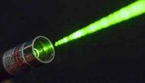

Proyectos
Proyecto Phyton

Descripción: Simular la propagación de luz en F.O con todos los parámetros. Simular la modulación óptica. Simular una red óptica. Simulacion de un sistema de comunicación óptica por satélite.
Diseño de una red de fibra óptica con tecnología GPON
Descripción: Diseñar una red de fibra óptica con tecnología GPON de una ciudad, bajo normativas y lineamientos de diseño de CNT; realizar los planos en AUTOCAD; dimensionamiento de Ingenieríia de Tráfico, equipos, topologías físicas y lógicas, memoria técnica en Hojas de Arcotel
Sistema óptico inalámbrico
Descripción: Implementar un sistema óptico inalámbrico para tx de audio, datos e imágenes a una distancia hasta 8 metros modificando el sistema electrónico propuesto, de acuerdo al archivo adjunto